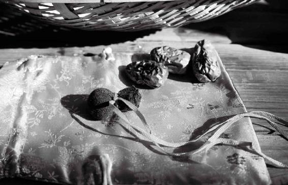
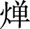

“红罗复斗帐，四角垂香囊”，是古代中国人美好的家居日常。我相信总有一天，这样的岁月静好会重现，传承千年的香囊养生文化会重新回到每个人的日常生活中，福佑我们的生命。

用中药香包来预防瘟疫是中国古人的一大发明。
现代科学研究发现：香包的药香味能刺激鼻黏膜，使鼻黏膜上的抗体含量提高，增强人体的抗病毒能力，对于预防感冒、鼻炎及各种呼吸道疾病都有一定效果。
2003年的SARS（重症急性呼吸综合征）流行，让我对中药香包的防疫作用有了切身体会。
当时北京情况最严重，我们全家都戴了特制的香包。有医院也采用香包预防SARS，全院1 176人没有一个人感染，包括直接治疗患者的医护人员在内，全体平安。
2015年MERS（中东呼吸综合征）袭来时，我给小孩子们配了抗呼吸道病毒的香包。这个配方平时也可以用来预防流感等各种呼吸道传染病。
原料：丁香、山柰各3克，菖蒲、砂仁、白豆蔻、川陈皮各2克，甘松、川芎、苍术、藿香、苏合香、冰片各1克。
做法：将全部原料打成粉末，混合均匀，装入香囊中，随身佩戴，不时放在鼻下嗅闻。
做好的香包，我们平时扎紧它的口子，避免药味散得太快。而在有传染病流行时，佩戴时可以把它的口子稍微打开一点，并且时不时闻一下。这样可以让香包里的中药香味刺激我们的鼻黏膜，从而让鼻黏膜产生抗体，有效地帮助我们防护各种呼吸道的病毒。
我也建议朋友们，一年四季养成用香包的习惯。出门有香包傍身，就像带了一位随身的护卫。外界的病毒往往在我们没有防备的时候不期而至，此时香包能为我们增加一道防御。
不仅如此，香包也有辅助调理身体亚健康的作用。
古代典籍多有记载用香包来充养正气、抵抗病邪、芳香化浊、通经开窍、疗愈弱疾。
有些朋友听我讲了香包的好处，用过之后就爱上了香包，连香水都不用了。
的确，古人佩戴香囊，不仅讲究它祛病强身的功效，也看重它所散发出来的隽永香气。
现代的香水，不管多么昂贵，总带有合成香精的气味。而传统的香囊，里面装的是天然的中药香料，具备实在的功效，不仅能保健、防病，还能香身、怡神，辟除汗味和蚊虫。
其实现代的名贵香水，在调香时也会加入中药来固香，这样香气才会高雅并且留香持久，肉桂、丁香、麝香、檀香、苏合香、安息香、没药，等等，都是制香水常用的原料。
特别是中药藿香，200年前传入欧洲后，成为香水行业不可或缺的上等香料，许多名牌香水都会用它，特别是男性香水，几乎都带有藿香的味道。
藿香正是藿香正气水的主药。新冠肺炎疫情期间，藿香在各种预防方和治疗方中高频出现。国家卫健委第六版诊疗方案中，中成药推荐了藿香正气水；10个治疗处方中，有6个用到藿香，就是取它芳香化湿的功效。
① 挂背包上，随身佩戴。用来辟除汗味、防蚊驱疫，走动起来衣带生香。
② 传统佩戴法。挂在腰带上，或挂在腋下或衣襟，悬于手肘后，香囊刚好垂于肝胆经循行位置，可以疏肝理气。
③ 挂车里。用来净化空气、预防晕车。
④ 放书桌上。用来宁心，帮助思考。
⑤ 放茶室里。用来清心除烦、怡情养性。
⑥ 放家里。将四个香囊挂在床头四角，或置放于房间四角，使满室皆香，安五脏、和心志。
古时男女皆佩香包、香囊。年轻人拜见长者，佩戴香囊是必需的礼仪。儿童佩戴香包驱虫辟邪，情侣之间赠香囊传情达意。
“红罗复斗帐，四角垂香囊”，是古代中国人美好的家居日常。
我相信总有一天，这样的岁月静好会重现，传承千年的香囊养生文化会重新回到每个人的日常生活中，福佑我们的生命。
2020年1月24日读者问：老师，您在微信公众号的文章（《今年为什么有肺炎疫情？如何用中药预防？》，2020年1月22日发表）中说，用中药香囊防疫病，可是官方辟谣说没有用。
允斌答：请问是哪个“官方”呢？用香囊可以防瘟疫，是自古以来经过中医实践证明有效的方法。
由于在疫情初期，提出香囊避疫的人还比较少，读者看了一些媒体说法后无所适从，所以有上面的问题发生。
在此之后，6个省的卫健委相继将香囊预防写入官方发布的新冠肺炎诊疗方案。3月1日，中国中医药管理局发布报道《中药香包“香”飘方舱医院》。
女儿四岁，前段时间感冒咳嗽流鼻涕，一个多月了还是有点流鼻涕。看了老师的防流感香包，去药房抓了药给她做成香包戴上，戴了两天一点都不流鼻涕了。
——我爱草药
我把四季香包放在客厅，原先很严重的鼻炎症状好像减轻些了，也不那么爱流鼻涕了，碰到衣柜的过敏源，也不容易发作了。
——芳草
我家外孙女有过敏性鼻炎，上周晚打喷嚏、鼻塞，我把允斌老师研制的香包打开，为她挂在胸前，然后时不时拿起让她闻一闻，不一会儿明显感觉症状缓解，她也很爱闻。
——55群红豆
我从去年11月开始做流感香包，让孩子们顺利度过流感高发季。今天也做了一些香包佩戴，感谢陈老师。
——维一
除夕这天突然满屏的疫情信息，好生惧怕。赶在药店关门前，买到了防感冒病毒香包材料，做了香包，闻一下，通体舒畅，仿佛一下子把身体各个脏腑打通了一样。尽管外面病毒肆虐，居家生活有香包护我周全。
——心怡
年前趁药店没关门，去配备了老师抗疫情中药香包，那叫一绝，一流鼻涕马上抓着中药香包闻，吸入鼻腔后三分钟不到，立马不流鼻涕了。
——灵
在新冠肺炎疫情期间，有几个省也在诊疗方案中加入了香包预防法。
1月27日，甘肃省卫健委发布
香囊基本方：藿香15〜30克，佩兰15〜30克，冰片6〜9克，白芷15〜30克。上述药物制粗散，装致密小囊，随身佩戴。个人可根据基本方自制。
2月1日，甘肃省卫健委发布修改后的配方
香囊基本方：藿香15〜30克，佩兰15〜30克，冰片6〜9克，雄黄3〜6克，白芷15〜30克，艾叶10克。上述药物制粗散，装致密小囊，随身佩戴。个人可根据基本方自制。
1月30日，河北省卫健委发布
香囊方：藿香、佩兰、金银花、桑叶、菊花，等份为末，制为香囊佩戴。
2月3日，海南省卫健委发布
香囊或空气熏蒸法：使用芳香类中药辟秽化浊，净化空气环境。可采用沉香、艾叶、艾绒、菖蒲等适量制成香囊佩戴净化口、鼻小环境空气；也可煎、煮、熏、蒸净化居室、办公场所等局部环境空气。（注：过敏体质者慎用）
2月5日，四川省卫健委发布
香囊方：藿香10克，肉桂5克，山柰10克，苍术10克。共研细末，装于布袋中，挂于室内，或随身佩戴，具有芳香辟秽解毒之功效，以预防疫病。
2月7日，湖南省卫健委发布
儿童香囊方：艾叶10克，苍术10克，羌活10克，丁香5克，白芷10克，藿香6克，石菖蒲10克，川芎10克。共研粗末，装入小布袋，随身佩戴，放于卧室或枕边。
2月11日，云南省卫健委发布
香囊方：使用芳香类中药辟秽化浊，净化空气环境。可采用苍术、藿香、艾叶、菖蒲等适量制成香囊佩戴净化口、鼻小环境空气。（注：过敏体质者慎用）
现代的消毒剂，虽能杀菌，但喷多了对人身体也有伤害。
有些人在家里熏醋，味道难闻，而且效果不佳。
古人是用中药熏香来消毒，不仅防疫病效果好，还能调理身体。好的配方，还能使满室芳香，风雅之极。
比如，李时珍在《本草纲目》里曾写过：“术能除恶气，弭灾疹。故今病疫及岁旦，人家往往烧苍术以辟邪气。”
这是有记录的前代医家的经验：苍术能祛除病气。在疫病流行时，以及岁末年初，用苍术来熏香，就能辟除病气，不受感染。
苍术有辛烈的香味，既能化外部环境的湿浊，又能散人体内部的湿郁。它还有防治皮肤过敏、发痒的作用。
有些人喜欢烧艾叶，艾烟也可以消毒，但是光闻艾烟对人不太好，因为艾烟会散我们身体的气，闻多了以后，人体会觉得气虚、乏力。我更建议把艾拿来艾灸。
如果想在家里熏艾，一定要让家人都离开。熏完，把味道散掉后，再让家人进来。
用苍术配伍其他气味辛烈的中药，用来给空气消毒，效果更好，而且我们可以废物利用。
我经常戴中药香包，我做的香包里，苍术也是主要原料之一。香包用一段时间后，气味淡了，我就会更换里面的药。用过的香包药粉，也不扔掉，而是放在电子熏炉里熏香。
我喜欢先放一层陈皮粉，再放中药粉。陈皮有增强药效的作用，经过加热后，中药粉里残留的药性就会挥发出来，再有陈皮的香气一提带，满室芳香，既消毒空气，又疏肝理气，而且非常好闻，闻后身心都觉得舒畅。
如果家里没有这种加热熏炉也不要紧，可以在锅里加一点水，然后把用过的香包里的药粉放进去，用水煮；当水沸腾时，就能散发出带药味的水蒸气。
如果家里没有用过的香包，也可以买一些中药，比如藿香、佩兰、白芷等，打成粉末，用香熏炉加热，或是煮水。
在疫情期间，实在不方便买药的话，也可以在家里就地取材，在厨房里找点芳香的调料，比如丁香、八角、豆蔻、肉桂、花椒，用来煮水，开小火让水一直保持微微的沸腾状态，让带有药味的水蒸气持续地净化家里的空气。
老公同事的父母确诊了新冠肺炎，其间我老公跟同事一起工作了五天，所以我们1月23日就开始主动隔离了，每日用中药泡脚、泡澡、熏香，将陈老师讲的苍术、藿香、佩兰、白芷打粉混合，用打火机点燃，一天熏两次房间。懂点养生知识和中医真好！不急不慌，也知道怎么应对。
——TQ（武汉，顺时养生营二期学员）
（注：该学员住在武汉，家人中有人密切接触确诊病例，但整个疫情期全家安然无恙度过。）
《扁鹊心书》中讲：“保命之法，灼艾第一。”
以前南方湿热，有瘴气，传染病比较多，高明的医生去这些地方，就会用艾灸来防病，而且是“发泡灸”，把皮肤灸出灸疮，隔一两天又灸，这样持续地灸着，以预防瘟疫感染。
比如新冠肺炎，病机以湿为主，可以多多艾灸足三里。足三里是管脾胃的重要穴位，艾灸足三里，可以给脾胃补阳气，有助于祛湿。
最好是每年冬至后坚持做三九（冬至后三个九天）灸，这样能很好地增强体质。
艾是纯阳之药，它的药性专入人体的足三阴。
什么是足三阴呢？就是肝经、脾经、肾经。这三条经络都走人体的下肢。艾的药性可以祛除足三阴经的一切寒湿。
艾灸、艾贴、艾浴，都有效果。经常手脚冰凉、膝盖发凉的人，用艾煮水泡泡脚，会感觉好很多。
古人有一句形象的比喻：“治病需要艾灸，就像做菜需要用到柴火一样。”
艾灸确实是养生防病的好方法。即使没有传染病时，人们也可以经常用艾灸来增强体质。
《扁鹊心书》还推荐了“长寿四穴”——关元、气海、命门、中脘：“人无病时，常灸关元、气海、命门、中脘，虽未得长生，亦可保百年寿。”
辽宁省卫健委发布的新冠肺炎预防艾灸方案
选取大椎、肺俞、足三里等穴位，艾灸10〜20分钟，每1〜2日1次，以益气扶正、芳香辟秽。
江西省卫健委发布的新冠肺炎预防艾灸方案
选穴：中脘、神阙、关元。
操作方法：循经往返悬灸。施灸时，艾条在施灸穴区附近缓慢移动，找到热感有渗透、远传、扩散、舒适等特殊感觉的位置，进行重点循经往返施灸。
灸量：每日1次，每次每穴施灸约45分钟。
在上述基础上，能够接受麦粒灸者，对足三里穴加麦粒灸，效果更佳。
注意事项：在施灸过程中，被施灸者应注意防寒保暖，室温保持在25℃左右；施灸后4小时内不宜洗澡。
这次的新型冠状病毒肺炎，说实话，我心里一点都不害怕。这种自信源于这两年我自学了中医，懂得“正气存内，邪不可干”。新冠病毒流行期间，我和家人几乎天天在家艾灸，艾烟也顺便把家里消毒一遍。家里还挂着两个辟疫香囊。整个春节及平时，我们家的饮食都比较清淡，素食多，肉食少，（老师讲的抗病毒食方）七菜羹里的菜经常吃，晚上也不熬夜。我们都顺利度过了这个多事的春节。
——顺时生活会34群小玲（珠海）
屈原《九歌·云中君》开篇第一句“浴兰汤兮沐芳”，讲的是用香草煮水沐浴，称为“浴兰汤”。
用芳香的中药来沐浴，是古人一个特别好的卫生习惯，可以祛湿、排毒、杀菌，预防皮肤病，祛除体内病气。
《黄帝内经》专门讲避疫病的方法有：“于雨水日后，三浴以药泄汗。”讲的就是通过香草药浴，让皮肤毛孔排出毒素。其中，“三浴”是多次沐浴的意思。
为什么说在雨水节气后沐浴呢？因为古时洗浴没有现在方便，冬天寒冷，而进入春天后，天暖适合沐浴，就用佩兰、藿香等香草洗去冬日的积垢和陈疾。
兰汤的“兰”，指的是中药佩兰，它的香气清雅，孔子赞叹它为王者之香。兰汤就以它为主料。
佩兰常与藿香搭配，这两样香草都是芳香化湿、杀菌抑毒的。在新冠肺炎疫情期间，各地开出的预防方和治疗方中也频频出现它们的身影。
以藿香、佩兰煮水洗浴，不仅可以祛湿、解毒、杀菌，预防皮肤病，祛体内病气，还能让皮肤变白，使人的身体散发香气。药浴不一定是泡澡，有很多家庭没有泡澡的条件。一位读者朋友想出了一个方法——把药浴包挂在花洒下面冲淋，让水流过中药包再淋到身上。
当然，也可以将中药煮水，直接用煮好的药水来洗浴。
原料：藿香15克，佩兰15克，白芷10克，艾叶10克，菖蒲10克，陈皮1个。
做法：1. 将全部中药放入锅里加水煮开，转小火煮5分钟，将水倒出来备用。
2.锅里再次加水，水开后煮5分钟。
3.将两次的水合并在一起，用来泡浴或淋浴，还可用来洗头发。
功效：防感染，美白香身，减少头屑，调理女性白带、月经不调、头痛。
香草沐浴，除了可以防病，还有一个好处：久用，可以褪掉皮肤的黄气，使皮肤更显白。
用藿香、佩兰沐浴的止痒效果是一流的。孩子起湿疹，我每日晚上用藿香、佩兰给孩子泡澡就不痒了，可以好好睡觉了。
——24群小雨点（山西）
我孕期一直用，很好！还有马齿苋原液，只要身上痒，一滴立马见效。
——Emily
跟老师学顺时而食后，家里的东西太多了，什么都是宝。没想到这场疫情下来，就发挥作用了。手中有药食材、药包、兰汤沐浴，心里不慌不惧。
——小凤
布诺芬问：老年人湿疹可否用？父亲为脾虚者。
允斌答：藿香对湿疹也有调理作用。
湿气是一种很顽固的病邪，许多疑难杂症都因它而起。可以这么说，湿气是“万病之源”。
《黄帝内经》中说：“伤于湿者，下先受之。”就是说湿气常常蓄积在人体的下焦——主要是管人体生殖和排泄的。凡是在这两方面有长期慢性病（比如慢性湿疹、慢性肾炎、关节炎、痛风、不孕等）的人，大多数都有湿气存在。
寒气和湿结合在一起，对下焦的伤害更大，尤其是伤肾。
日积月累，人体的抵抗力也会全面降低。
祛除下焦寒湿，最简单的方法就是泡脚。
原料：艾叶90克，花椒60克，小黄姜60克。
做法：将原料打成粉，做成7〜10个足浴包，每次取一包，放在开水中浸泡后用来泡脚。
病毒容易在什么样的环境下滋生呢？就是又湿又脏的环境。
在呼吸道病毒流行时节，比如流感季节，用花椒、艾叶、姜等每日泡脚，能够祛除我们体内的寒湿之气，增强身体的抵抗力，帮助我们把体内的环境变得更干净。
如果材料不齐，可以看看厨房里有没有大葱。把大葱外面一层的葱皮剥下来，用它来煮水泡脚。
葱代表“通”，它能使鼻窍畅通。如果有鼻塞或是流鼻涕现象的话，用大葱煮水泡脚，效果是很好的。
在我们的足背上，有呼吸系统的反射区，我们让这块区域暖暖的，对于提升正气、抗病毒很有帮助。
如果在疫情时期不方便外出买材料，家里什么都没有，那么您至少要用热水泡脚，这对身体有好处。
泡脚是非常重要的养生方法。南宋著名诗人陆游讲过“洗脚上床真一快”，泡完脚再去睡觉，真是一件非常舒服的事情。
——悠然见南山
——12群读者
江西省建议用艾足疗。
甘肃省发布的足浴预防方
基本方：杜仲30〜45克，川断〜45克，当归〜20克，炙黄芪30〜45克，藿香15〜30克，木瓜20〜35克，生姜15〜20克。
用法：加水1 000毫升，水煎45分钟，取汁，入桶中足浴。每日1次，每次15〜30分钟，以全身微微出汗为度。
河北省发布的足浴预防方基本方：当归20克，黄芪30克，藿香20克，佩兰15克，生姜15克。
用法：加水2 000毫升，水煎45分钟，取汁，入桶中足浴。每日1次，每次30分钟，以全身微微出汗为度。
在脚底和脚背分别敷药，可以上病下治，调理全身，这是历代医家的实践经验。
在足背，有肝经的重要穴位，以及呼吸系统和乳腺的反射区。有乳腺增生、脂肪肝、耳鸣的人，以及儿童，都可以通过足背敷药调理。
五脏六腑的反射区都在足底。亚健康、慢性病、心血管病、脚后跟痛、鸡眼、脚气、脚汗，及女性的月经不调、闭经、子宫肌瘤、卵巢囊肿、产后病等问题，都可以通过足底敷药调理。
足底敷药和足背敷药可以同时进行——把中药打成粉末，缝制成药包，制成鞋面内里和鞋垫，做成中药养生鞋来穿。
通过体温、出汗，加上行走时的压力这三重作用，中药的药性可以持续地通过双脚进入人体循环，改善全身。
这个方法很温和，各类亚健康人群、老年人、儿童、产妇坐月子（孕妇不宜）都可以用。
以下是大家实践后的经验分享。
祛湿气
如果体内寒湿重，穿养生拖鞋后，大小便会增多。
——37群葡萄
穿了半个月养生鞋感觉身子不怎么沉了。以前跳绳会觉得腿抬不起来，春游那天，小朋友约我跳绳，我就跳了几下，觉得很轻松。
——心的呼唤
穿中药鞋不仅能除脚臭，还能排湿。我穿了快一个月了，脚底出汗，早上的便便也比平时多。
——19群读者
每到夏天我的脚都会脱皮、起泡、奇痒无比，今年居然不痒了。不知道是不是穿养生鞋排湿毒的原因。
——36群晓
祛脚臭
我老公和我家孩子都脚臭，常穿中药鞋后，脚不臭了！
——21群读者
穿养生拖鞋确实能祛脚臭，很舒服，我从来没有这样喜欢过穿拖鞋，现在一回到家就换上，巴不得一直穿着。
——31群读者
防脚裂
左脚底时常起皮甚至开裂，每次穿一个星期左右的药鞋，这种现象就会消失，脚底也逐渐恢复光滑。
——默默
我一直在穿养生鞋，从冬天穿到春夏。我已到中年，穿上养生鞋后脚底变得光滑，干湿适度，脚上的很多问题都没有了。
——9群读者
抵御新冠病毒有养生鞋保驾护航。去年11月19日穿上了养生鞋，一个月的时间，身体发生了很大变化：脚拇指外翻得到遏制，不再疼痛；脚后跟因骨质增生而产生的炎症消退了，可以尽情地迈开大步向前走；双脚后跟开裂现象消失，皮肤光滑柔软，双脚天天处在温暖之中，十分舒服。
——Ping
防鸡眼
我爸爸78岁了，以前脚底会长鸡眼，每次磨掉就又长出来。我给他用了中药拖鞋，他穿了三四个月了，昨天跟我说鸡眼没有了，穿运动鞋走长路也不会感觉脚疼了，而且感觉腿上也有劲了。
——35群读者
我脚底长了一大块硬皮，走路时脚特别疼。自从穿了中药养生鞋，硬皮变小了，也没有那么硬了。
——18群读者
防脚气
看了大家关于中药鞋的分享，说中药鞋养脚，抱着试一试的态度自制了一双，用的药也没有老师推荐的那么多、那么严谨。结果发现脚上血液循环变好了，热乎乎的，很干爽，脚上的汗少了，脚也不发臭了，水泡也少了。20年的老毛病就这样好了，很神奇！
——51 群读者
孕后期感染了脚气，用了很多药都不是很好使，我真是太闹心了！生完孩子后，我立马就穿上了养生拖鞋！虽然一直没好，但也不痒了。出月子后洗东西时，不小心把鞋给弄湿了，就换成别的棉鞋，结果那几天，脚特别痒。幸好天气热，鞋子很快就干了，穿上后第一天脚就不痒了，第二天就好了。我决定从此就穿着它不脱了！
——43群读者
往年夏天，我都会有脚气，其他季节没有。去年冬天穿了中药拖鞋，春天喝荠菜水，今年到现在没有再犯过脚气，估计是我体内有湿气，祛湿寒时就捎带把脚气给治好了。
——12群读者
之前，我的脚又痒又烂，还有味道，结果前天仅穿了一天养生鞋，昨天就不痒了，满脚都是药材的味道。
——25群读者
通气血
整个冬天都穿着养生鞋，最大的感受就是脚不凉了，以前一到冬天就会手脚冰凉，穿多少衣服脚还是凉的。
——小梅
我常在家里穿养生鞋，之前感觉浑身无力，现在浑身舒服，一身轻松。
——张鹏
去年穿了整整一个冬天的养生鞋，以前脚心爱出汗，穿了养生鞋后，一直都很干燥温暖。
——琦琦
我们都属于体寒，冬季怕冷，手脚冰凉，自从穿上中药鞋，脚底一会儿就暖了，整天都很舒服。现在在家会一直穿。
——41群芸儿
以前每日晚上睡觉时，脚丫都是冰凉的，泡脚也要泡得久一点才温暖。夏天做火疗时，也是烧了许久才感觉到热。感觉自己非常容易冷，可能是因为自己太瘦、弱不禁风。自从穿上养生鞋，每天脚丫都变得很热乎。
——暖阳
我昨天早上穿了半个小时养生鞋，原来像冰溜一样的双手居然到现在还是暖的。我现在真是恨不得一天24小时都穿着它，实在是太好了。
——温心
在《吃法决定活法》中我介绍过用中药吴茱萸贴足心的方法，用来引热下行：当身体上面有火、下面有寒，出现上虚火、血压高、口腔溃疡等情况时，可以用吴茱萸打粉贴在脚心涌泉穴来调理。
其实，中药不仅可以贴敷足心，还可以贴敷手心。这也是古人的妙法。
在我们的手心，有一个重要的穴位：劳宫穴。这是一个保健心脏的大穴。
睡觉时把中药贴敷在手心，让药物透皮吸收，通过劳宫穴作用于身体，可以引毒外出，清心肺之热，化心肺之瘀，止咳喘，安定心神，还能降血压、助睡眠。
在以前，老人治疗家里的小孩发热、惊厥、咳嗽、夜啼等症状，就会用中药敷在小孩手心，小孩睡一觉就缓解了。
伸出左手，用右手的三根手指在左手的腕横纹上方比一下，腕横纹上三横指处，居中的一点就是内关穴。这是救治心脏病的要穴。在胸闷不适的时候，可以马上按压这个穴位。
2010年有一次，我坐在汽车里，车忽然猛地颠簸并急刹车，巧的是正值我张口欲说话，身体被突然这么一晃，一下子感觉岔气了，心口剧痛，连话都说不出来了。坐我旁边座位的助理，见我突然不说话而且面无血色，吓坏了，问是否要去医院。
我摇摇头，用手指着左手腕内关穴的位置向她示意。她领会了，马上在我指的位置用力按压。不到一分钟，我吐出一口气，感觉舒服了，也能说话了。
其实小助理当时还不懂什么是内关穴，但是只要找到位置，用力按压就有效。
在这个位置，我们也可以贴敷中药来给心脏做保健。敷贴的方便之处是敷的面积大，找穴位不太准确也不要紧，按照大概位置贴敷在手腕上就可以。
清温手心贴的原方出自清代传下来的验方。1971年北京医学院防治气管炎协作组编写了一本治疗感冒、咳喘、气管炎、肺炎的小册子，其中收录了这个老验方。
这本小册子至今还在我家书架上保存着，当年父亲亲手包的书皮都泛黄开裂了，但是好的方子是不会过期的，时间越久，有越多的人使用，就积累出更多的经验，开发出更多的功效。
清代医家用这个方子来治疗小儿高热惊厥，敷贴一次即可见效。
民间用这个方子来给幼儿退热止咳。
现代有医院用这个方子来辅助治疗气管炎、哮喘、高血压、冠心病，也收到了不错的效果。
原料：栀子、桃仁、杏仁、白胡椒各7粒。
做法：把这四种原料打成粉，加一点鸡蛋清或油调和，贴敷12〜24小时取下。
功效：引毒外出，清心火，退热，安神，促进睡眠；调理咳嗽、哮喘；调理胸闷、高血压。
注意：孕妇忌用。
可以贴敷哪些部位？
·手心（劳宫穴）
·脚心（涌泉穴）
·手腕（内关穴）
·胸口（膻中穴）
哪些人适合贴敷手心和脚心？
·患有感冒、高热、咳嗽、哮喘、肺炎、支气管炎、咽炎等呼吸道疾病的人
·经常腹胀、消化不良的人
·便秘的老年人
·心烦、心火重导致睡眠不好的人
用法：1岁以下幼儿只贴敷单侧的手心和脚心，第一次贴左脚心和右手心，第二次贴右脚心和左手心。其他人可以敷双手双脚。
哪些人适合贴敷手腕和胸口？
·感觉胸闷的人
·血压高的人
·动脉硬化的人、处于心血管亚健康状态的人
用法：敷在左手手腕和胸口膻中穴位置。
注意：要去药店购买中药杏仁（苦杏仁），不要用超市买的杏仁（甜杏仁）。桃仁用

过的。打粉时注意，桃仁、杏仁出油比较多，容易黏结成团。
敷后，有的人被敷的地方皮肤可能会变得有点黄、有点青，这是正常的，会自然消退。
个别人敷后会有轻微腹泻，这也是正常的，身体通过肠道排毒，之后就会好了。
清温手心贴这个方子看似简单，四味药都很平常，其中却包含了一个著名的经典药方“双仁丸”。
双仁丸出自宋代太医局编写的医书《圣济总录》，用来治疗“上气喘急”的咳喘。
这种咳喘是什么样的呢？
肺虚受寒……有邪热客于上焦。
气上而不下，升而不降，痞满膈中。胸背相引，气道奔迫，喘息有声者是也，本于肺脏之虚。复感风邪，肺胀叶举，诸脏之气又上冲而壅遏。
——宋 《圣济总录》
简单地说，就是肺气虚，受了风寒，又有肺热，引起咳嗽哮喘、胸闷，甚至呼吸急促困难。
双仁丸的名称来自它所用的两味药：杏仁和桃仁。
桃仁和杏仁，都有止咳、平喘、润肠通便的作用。
杏仁是治疗咳喘的经典药，医圣张仲景著名的治咳喘方麻杏石甘汤就用到杏仁，治疗新冠肺炎的清肺排毒汤就用了这味药。
桃仁，一般用来活血化瘀，其实它化痰的作用也很好。（桃仁和杏仁的详细功效和用法，《回家吃饭的智慧》中有讲解。）
当人的身体内有毒有瘀，堵在胸腹这块时，在上容易引起咳嗽、气喘、胸闷，在下容易造成大便干结，这种时候将桃仁、杏仁搭配在一起用，效果不错。
国家卫健委发布的新冠肺炎治疗方中，有一个救治重症的方子——桃红麻杏石甘汤，就用了桃仁、杏仁这个组合。用来治疗什么样的重症呢？“痰热壅肺、毒瘀互结”——症状是高热、咳嗽、胸闷、气促、咽干、口渴。
值得一提的是，上方中还复加了鱼腥草，用量是30克，用来增强此方的清肺功效。
我们平时用清温手心贴外治法时，配合喝点鱼腥草水也是很好的。（哪些情况适合喝，参见本书第126页“抗流感的代茶饮”。）
在宋代双仁丸的基础上，将杏仁、桃仁配栀子来敷手心、足心，是后世医家的巧妙应用。
清代医生邹存淦说这个方法治疗小儿惊风（高热惊厥）有特效：
杏仁、桃仁各六粒，黄栀子七个共研烂，加烧酒、鸡子清、白干面，量患者年岁作丸，如胡桃大小，男左女右，置于手足二心，用布条扎紧，一周时，手足心均青蓝色，则病已除矣，效甚。
这个方子应该是在清代之前就流传了，在民间演变出不同的版本，杏仁、桃仁、栀子的比例有差异，有的用胡椒，有的不用。
我的经验是方子里有胡椒更好一些，适用范围更广。
有的方子不用栀子，而是用木鳖子来配桃仁、杏仁、胡椒。
木鳖子的药性更猛，但是它有毒性，还是用栀子安全。栀子是一味很好用的药，可以清热、泻火、凉血，可以治疗心烦失眠、糖尿病导致的口渴、咽喉痛、流鼻血、扭伤肿痛等。
我们平时也可以用这个方子来保健。
发热、咳嗽、咽炎、胸闷、腹胀时，可以用它来缓解身体不适。
清温手心贴对心火引起的失眠也有帮助。晚上感觉心烦、燥热，睡不好的人，用清温手心贴贴在手心和脚心，能睡得更深沉安稳一些。
如果是老年人，还可以贴在胸口上，效果更好。
清温手心贴还有一个妙用，就是用于心脏保健。平时感觉胸闷，或者处于心血管亚健康状态的人，可以用这个方子来贴膻中穴和内关穴。
用手在胸口找到两个乳头连线的中间位置，这里是膻中穴。用手按一按，如果觉得很痛，说明有瘀，可以在这里贴一个清温手心贴。
母亲来北京过年，连续三天严重雾霾，她感觉心肺部位憋闷，很不舒服，坐着都难受，只能卧床。用清温手心贴贴在胸口和脚心，第二天早上就好了，精神抖擞地打起了太极。
母亲没有心血管疾病，所以恢复快。
如果是有“三高”、动脉硬化、心血管有瘀阻的人，平时想要做心脏保健，可以同时贴敷胸口（膻中穴）、手腕（内关穴）和脚心（涌泉穴）。